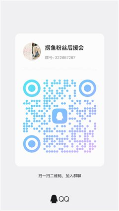

AirPods 小助手
v1.6.0
未连接
点大按钮按优先级连接
我的耳机
＋
添加新耳机

粉丝群一起摸鱼聊技术先在 Windows 声音设置确认耳机为默认输出并点「测试」；若输出列表没有耳机，在「更多声音设置 → 播放」中显示已禁用的设备，仅当这副耳机的播放项显示「已停用」时启用它。仍无声再手动关开电脑蓝牙；再不行只遗忘这副耳机并重新配对；最后重启电脑。应用不会自动重置整机蓝牙。
登录 Windows 后自动在后台运行（默认关闭）
未设置时默认关闭，保留你原来的麦克风。开启后，下次连接自动选择耳机麦克风；关闭时尝试恢复本次由小助手改过的选择，不覆盖你后来的手动选择。
微信语音或游戏使用蓝牙耳机麦克风时，Windows 可能切到通话模式。关闭此开关不禁用耳机麦克风，也不会结束其他应用正在使用的录音；可在通话／游戏设置中改用电脑或外接麦克风，并重新开始通话。旧版本或重启前的默认选择没有恢复记录，需手动确认。
若从关改为开、且这副耳机的录音设备缺失，下次连接仅尝试一次恢复耳机的 HFP 服务；Windows 可能安装相应驱动。不会重置整机蓝牙或影响其他设备。
音频失败不等于无线电故障；此版本不再自动重置全部蓝牙设备。